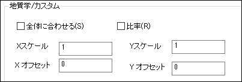

XY/YZ/XZ面タブは、XY/YZ/XZ面を持つプロットタイプのコントロールを提供し、グラフの面の塗りつぶし領域と境界を編集するために使用できます。 どのタブの設定も似通っているので、ここではXZ面タブについて説明します。
特定のグラフタイプに対してコントロールが適切でない場合、このタブでの制御はできません。
| 色 | 境界線の色を選択します。 色の選択については、 データプロットの色を編集する をご参照ください。 |
|---|---|
| 線種 | 線の種類を選択します。 |
| 幅 | 線の太さを入力または選択します。 線の太さは、1ポイント(＝ 1/72インチ)を単位とします。 |
Note: 破線のパターンは、｢オプション｣ダイアログボックス(｢ツール：オプション｣)のグラフタブにある、Originの破線の種類グループで編集できます。 |
塗りつぶしの色を選択します。透明に表示するには、｢なし｣を選択します。色の選択については、 データプロットの色を編集する をご参照ください。
カラーセレクタと同様のパターンセレクタを使用してパターンを塗りつぶす方法を指定します。
全ての棒、スライス、領域を塗りつぶすためにデフォルトパターンリスト、標準または地質学からパターンを選択します。
地質学を選択すると、パターンの編集を行う以下のコントロールが表示されます。 
選択されたパターンを適用する2つのモード、全体に合わせると比率があります。
このタブのオプションでは以下の設定が可能です。
このタブの選択によって、パターンリストタブが表示されます。
このタブはグループ化プロットでのみ利用できます。グループ化されたプロットを推移させるには、パターンリストを選択します。
塗りつぶしパターンを選択すると、｢パターンの色｣ボタンが有効になります。このボタンをクリックすると、選択したパターンの色を設定するために使用できるカラーセレクタが開きます。
自動が選択された場合は、Originはパターンの色に縁グループの色が適用されます。
塗りつぶしパターンで線の太さを指定します。 線の太さの単位は、１ポイント(＝ 1/72インチ)となります。
階調色のモードを指定します。
これは階調色が1色になっている時のみ利用できます。 スライダーを使用して、黒から白への階調色の明るさ(％単位)を変更します。
これは階調色が2色になっている時のみ利用できます。 階調を作るための2色目を選択します。
色の選択については、 データプロットの色を編集する をご参照ください。
これは階調色が1色または2色になっている時のみ利用できます。 塗り色がどのような方向から変化していくのかを指定します。
このビューボックスに現在のタブでの設定が表示されます。
XY/YZ/XZ面の透過率を設定します。目盛りをスライドするか、コンビネーションボックスに、0から100の整数入力します。0は全てのシンボルは透過しておらず、100は完全に透過している事を示しています。
このドロップダウンリストで、XZ面とXY面の関係を指定します。 このドロップダウンリストは、XZ面タブまたはYZ面タブでのみ利用できます。
| 同一 | データプロットのXY面タブの塗りつぶし設定をXZ面タブでも使用します。 |
|---|---|
| 独立: | XY面タブの塗りつぶし設定とは関係なく、XZ面の塗りつぶし表示を設定します。 |
| より明るい または より暗い | XY面タブで選択した塗りつぶし色の明るいまたは暗い色合いをXZ面で表示します。 |